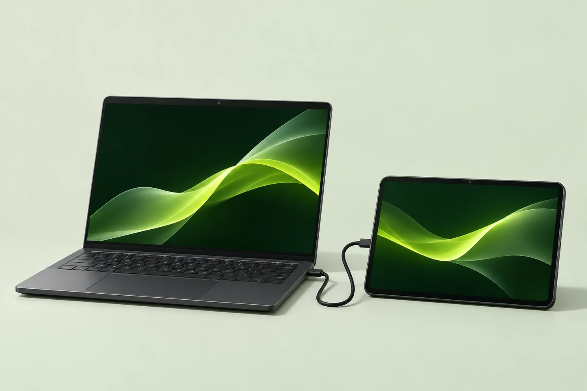
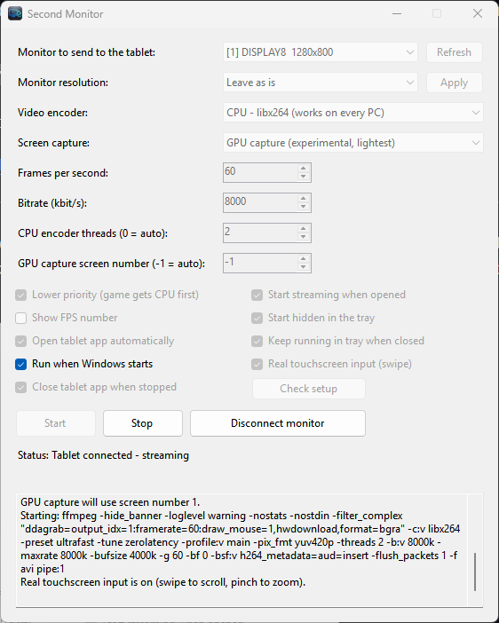

Extend your desktop
Drag notes, chat, or a reference onto the tablet while you work on your main screen.
Windows + Android
Turn the Android tablet you already own into an extended display and touchscreen for your Windows PC.
Free and open source. No account or subscription.

Keep the tools you reach for in view, with touch controls and a wired connection.
Drag notes, chat, or a reference onto the tablet while you work on your main screen.
Use the tablet as a Windows touchscreen. Switch to mouse mode for single-finger clicks and drags.
Disconnect to bring windows back to your remaining displays. Reconnect to restore the tablet’s saved resolution and position.
Run the setup executable as an administrator. It can install missing PC dependencies and includes the tablet app.
Use a USB data cable, enable USB debugging, and accept the authorization prompt. Use the installer’s USB option to add the tablet app.
Select the virtual display in Second Monitor. Choose Connect monitor, or Start if the display is already connected.

Stop ends streaming and keeps the virtual display active. Disconnect monitor removes it from the active desktop, and Windows moves its windows to the remaining displays.
Yes. If your saved secondary display is disconnected and available, launching Second Monitor reconnects it and starts streaming.
No. Second Monitor uses a USB data cable for video and touch input. The tablet needs USB debugging enabled and must authorize your PC.